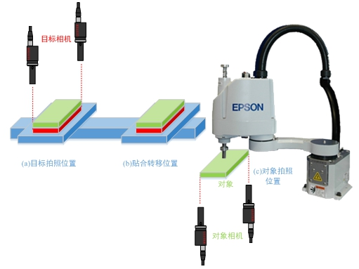
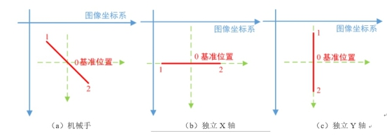
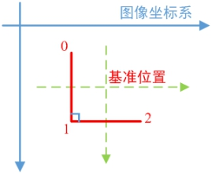
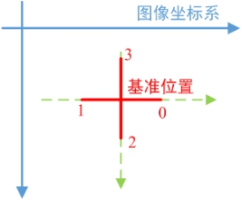

关联工具的基本原理是，通过机械手和平台的反向对位运动，将对象产品从对象相机多次转移到目标相机，并结合对象相机标定结果，建立目标图像坐标系和平台坐标系的转换关系。

如图1所示位置变换流程，关联标定的转移运动与对位运动相反，对象相机在（c）位置先对对象拍照，机械手和平台在（b）位置完成组装或贴合，目标相机在（a）位置再对对象拍照，以上步骤依据步数重复多次。关联标定轴位置获取工具就是用于生成在关联标定过程中相应步数对应的相对轴位置。
| 分类 | 参数名称 | 参数描述 |
|---|---|---|
| 属性窗口 | 平台类型 | 有XY/X/Y三种类型选项，即关联标定中不存在D轴偏移。 |
| 标定运动步数 | 设置关联标定中轴的运动步数，单X或Y轴运动2步即可，而XY轴运动可选2/3/4步。 |
|
| 轴正方向 | 用于根据实际项目设置X/Y轴方向。 | |
| 轴运动步长 | 用于根据实际项目设置X/Y轴的运动步长。 | |
| 图像窗口 | 无 | 无 |
| 数据链 | 索引值 | 输入步数索引，用来决定输出该索引对应的轴位置。 |
| 高级界面 | 无 | 无 |
| 分类 | 参数名称 | 参数描述 |
|---|---|---|
| 监视窗口 | 轴位置 | 索引值对应的轴位置结果。 |
| 交互运动步长 | 输出轴的交互运动步长。 | |
| 轴方向 | 输出轴正方向。 | |
| 执行结果 | 工具执行结果。 | |
| 执行时间 | 工具执行时间。 | |
| 数据链 | 轴位置 | 索引值对应的轴位置结果，供后序工具使用，同监视窗口参数。 |
| 交互运动步长 | 轴的交互运动步长，供后序工具使用，同监视窗口参数。 | |
| 轴方向 | 轴正方向，供后序工具使用，同监视窗口参数。 |
在关联标定运动中，轴类型的不同，则关联点不同，对应的反向运动转移次数也不同。对于独立X或Y轴等单轴平台，适用于进行两点关联标定，机械手进行两次转移运动；对于XYD平台，则可以进行两点、三点或四点的关联标定，机械手进行相应次数的运动。具体如下：
1.两点关联标定是指，机械手进行两次转移运动，建立目标图像坐标系与平台坐标系的转换关系，包括旋转、缩放和平移。两点关联标定适用于机械手，以及独立X或Y轴等单轴平台。两点关联标定的转移运动路径，如图2所示。

表1是图2对应的位置列表，X0和Y0是机械手预设的拍照位置，即基准位置，DX和DY是机械手在X和Y方向的单位运动步长。
| 索引 | 位置 | XY轴坐标 | X轴坐标 | Y轴坐标 |
|---|---|---|---|---|
| 0 | 基准位置的负方向 | (X0 - DX, Y0 - DY) | X0 - DX | Y0 - DY |
| 1 | 基准位置的正方向 | (X0 + DX, Y0 + DY) | X0 + DX | Y0 + DY |
2.三点关联标定是指，机械手进行三次转移运动，建立目标图像坐标系与平台坐标系的转换关系，包括旋转、缩放和平移。三点关联标定的转移运动路径，如图3所示。

表2是图3对应的位置列表，X0和Y0是机械手预设的拍照位置，即基准位置，DX和DY是机械手在X和Y方向的单位运动步长。
| 索引 | 位置 | XY轴坐标 |
|---|---|---|
| 0 | 基准位置的左上 | (X0 - DX, Y0 - DY) |
| 1 | 基准位置的左下 | (X0 - DX, Y0 + DY) |
| 2 | 基准位置的右下 | (X0 + DX, Y0 + DY) |
3.四点关联标定是指，机械手进行四次转移运动，建立目标图像坐标系与平台坐标系的转换关系，包括旋转、缩放和平移。四点关联标定的转移运动路径，如图4所示。

表3是图4对应的位置列表，X0和Y0是机械手预设的拍照位置，即基准位置，DX和DY是机械手在X和Y方向的单位运动步长。
| 索引 | 位置 | XY轴坐标 |
|---|---|---|
| 0 | 基准位置的正右 | (X0 + DX, Y0) |
| 1 | 基准位置的正左 | (X0 - DX, Y0) |
| 2 | 基准位置的正下 | (X0 , Y0 + DY) |
| 3 | 基准位置的正上 | (X0 , Y0 - DY) |
参见“\Samples\XY轴4步关联标定+对位计算.gvp”